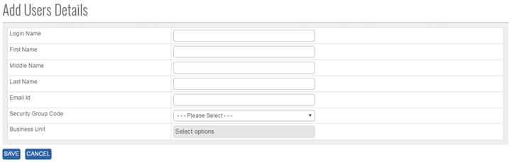


	<section>
		<article>

			<h2>User<span></span></h2>
			<div>
				<p></p>

				<p>User module comes under User Mgmt. It can be accessed by user who has rights for this module.</p>

				<p>Go To >> Master >> User Mgmt>>User>><b>ADD</b></p>

				<p>ADD New User in master: Click on add button at top right corner of the page and the following page will open.</p>

				<div class="triangle-border top">				
					
				</div>

				<p><b>To ADD a "User" in the system, system will have following fields.</b></p>

				<p>- User will enter Login Name (Alpha Numeric is valid).</p>

				<p>- User will Enter First Name (Alpha Numeric is valid).</p>

				<p>- User will Enter Middle Name (Alpha numeric is valid).</p>

				<p>- User will Enter Last name (Alpha Numeric is Valid).</p>

				<p>- User will Enter Email Id (Alpha Numeric and special Char Is valid).</p>

				<p>- User will Select one Security Group form List Box.</p>

				<p>- User will Select single/multiple Business unit for user. Based on which Acquisition/Syndication deals will be shown to user.</p>

				<p><b>Note:</b> - '*' represents the respective object is mandatory.</p>

				<p>Click on <b>Save</b> Button user will get alert message "User Record added successfully"</p>

				<p>Click <b>Cancel</b> Button cancel the add operations and previous window will appears and data should not saved</p>

				<p><b>Note:</b> User name should be unique. </p>         

				<p><b>Modifying Existing User</b></p>

				<p>The user who has a right to edit can edit the existing "<b>User List</b>" in the system. All the fields can be edited by user, which impacts all its references in the system. </p>

				<p>Click <b>Edit</b>, Edit User List Column will be shown User Name as per added previously.</p>

				<p>Go To >> Master>>User Mgmt>>User>>Click Radio Button (User Name) >> <b>EDIT</b></p>

				<p>System will allow editing all the User details. </p>

				<p>Click <b>Update</b> to save the currently added operations, user will get alert message <b>"User Record Updated Successfully"</b>.</p>

				<p>Click <b>Cancel</b> to cancel the add operations and previous window will appears and data should not save.</p>

				<p><b>DeActivate/Activate existing User</b></p>

				<p><b>DeActive</b> - Click on Deactivate Button, once the button is clicked it will ask confirmation message "Are you sure you want to Deactivate this record" with "OK and cancel" button.</p>

				<p>If user clicks on OK Button, record will get deactivated and if clicked on Cancel, record will not get deactivated.</p>

				<p><b>Active</b> - Same way once a record is deactivated, system will show Active button. If user clicks on Active button, record will get activated.</p>

				<p><b>Search /Show All Criteria</b></p>

				<p>- User can search By User Name and then click on <b>Search</b>, it will show the result as per the search criteria. User can search name by single alphabet.</p>

				<p>- If user want to check all User List then click on <b>Show All</b> Button. It will show the list </p>

				<p>- Click on page no, System will navigate the desired page, per page 10 records will be displayed. </p>
			</div>
		</article>
	</section>